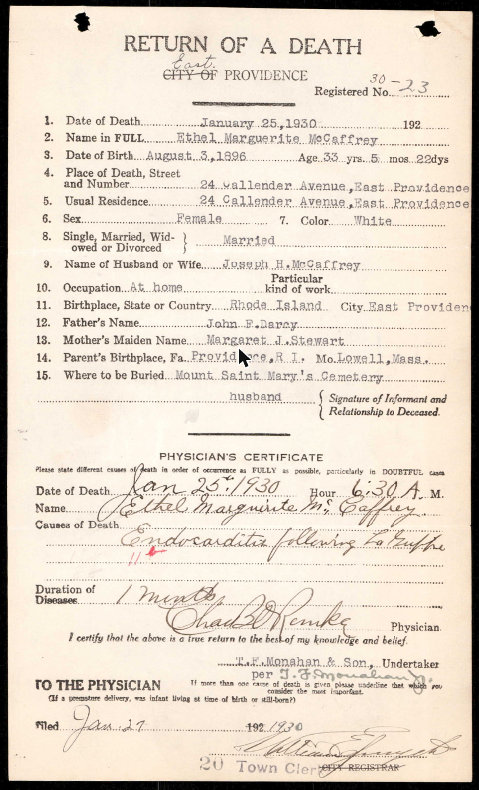

Death of Albert’s sister Ethel Marguerite (Darcy) McCaffrey: her mother named as Margaret J. Stewart
Rhode Island Death Registrations and Records, 1852-1946; East Providence certificates, 1930 Jan–May, image 20 of 130

The original record, as it appears in the register or index.
What this document is
A death record kept by the state of Rhode Island.
What it says
Return of a death, East Providence, registered no. 30-23. Ethel Marguerite McCaffrey died January 25, 1930, at 6:30 a.m. at her home, 24 Callender Avenue, East Providence. Born August 3, 1896, East Providence; age 33 years, 5 months, 22 days; married, wife of Joseph H. McCaffrey; at home. Father John F. Darcy, born Providence, R.I. Mother’s maiden name Margaret J. Stewart, born Lowell, Mass. Cause: endocarditis following la grippe (influenza), one month. Physician Chas. B. Remke(?). Buried Mount Saint Mary’s Cemetery; undertaker T. F. Monahan & Son. Informant: her husband. Filed January 27, 1930.
Place
24 Callender Avenue, East Providence, Rhode Island
How it was read
Read from the certificate image. The mother born at Lowell is plainly Margaret Jane (born Lowell 1869); here her husband’s side gave her maiden name as Stewart, while her own 1942 certificate (her son Albert as informant) and her daughter Lillian’s 1914 marriage give Nodder/Nodders. The reason for the two names is not yet found.